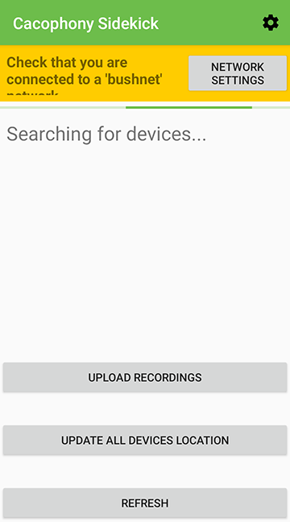

<!DOCTYPE html><html class="no-js" lang="en"><head>
    <meta charset="utf-8">
    <title>Cacophony continuous improvements Android app and web portal redesign | Portfolio | Sara Coutinho - Interaction designer and developer</title>
    <meta name="description" content="Helping the birds sing louder by contributing to the Cacophony project">
    <meta name="viewport" content="width=device-width, initial-scale=1">
    <link rel="preconnect" href="https://fonts.gstatic.com">
<link href="https://fonts.googleapis.com/css2?family=Lora:ital,wght@1,400;1,700&amp;family=Mulish:wght@300;400;600&amp;display=swap" rel="stylesheet">

<link rel="stylesheet" href="../css/main.css">
	<link type="text/css" rel="stylesheet" href="../css/portfolio.css">

    <link rel="stylesheet" href="https://cdn.knightlab.com/libs/juxtapose/latest/css/juxtapose.css">
</head>
<body>
<div id="main" class="portfolio-item-page-wrapper cacophony">
    
<header id="main-header">
	<div class="content">
		<a href="../" class="logo-inline">Sara Coutinho</a>
		<nav class="nav-main" id="main-menu">
			<ul>
				<li class="about">
					<a href="../about">
						<span class="title">About me</span>
						<span class="caption">A brief intro</span>
					</a>
				</li>
				<li class="skills">
					<a href="../what-i-do">
						<span class="title">What I do</span>
						<span class="caption">Process &amp; Skills</span>
					</a>
				</li>
				<li class="portfolio portfolio-page">
					<a href="\portfolio\" class="selected">
						<span class="title">Work</span>
						<span class="caption">Portfolio</span>
					</a>
                    <ul class="sub-menu">
                        <li>
                            <a href="kiwiviz">KiwiViz</a>
                        </li>
                        <li>
                            <a href="cacophony" class="selected">Cacophony</a>
                        </li>
                        <li>
                            <a href="ws">WhereScape</a>
                        </li>
                        <li>
                            <a href="trimble">Trimble</a>
                        </li>
                        <li>
                            <a href="tvn">TVN</a>
                        </li>
                        <li>
                            <a href="bird-counter">Bird Counter</a>
                        </li>
                    </ul>
				</li>
				<li class="scrapbook">
					<a href="http://scrapbook.saracoutinho.co.nz" target="_blank" rel="nofollow">
						<span class="title">Scrapbook</span>
						<span class="caption">The inspiration stream</span>
					</a>
				</li>
				<li class="contact">
					<a href="../contact">
						<span class="title">Contact</span>
						<span class="caption">Say hi</span>
					</a>
				</li>
			</ul>
			<button class="trigger" id="menu-hide">Close</button>
		</nav>
		<button class="trigger" id="menu-show">Menu</button>
	</div>
</header>    <div class="project">
        <article id="introduction">
            <nav class="project-nav" id="project-nav">
                <ul>
                    <li>
                        <a href="#introduction">Introduction</a>
                    </li>
                    <li>
                        <a href="#background">Background</a>
                    </li>
                    <li>
                        <a href="#challenge">Challenge</a>
                    </li>
                    <li>
                        <a href="#android-app">Android app</a>
                    </li>
                    <li>
                        <a href="#web-portal">Web portal</a>
                    </li>
                    <li>
                        <a href="#results">Results</a>
                    </li>
                </ul>
            </nav>
            <header class="project-intro">
                <div class="logo tvn-logo">
                    
                </div>
                <h1>Helping the birds sing louder by contributing to the Cacophony project</h1>
                <p class="lead">The Cacophony Project is an open-source project developing and deploying a set of technologies to control introduced mammal predators in New Zealand, with the aim of helping the native bird population recover. Over the years I've been contributing to the project, from redesigning Android apps, to reworking a web portal and visualising an index of bird song.</p>

                <!--<p class="visit-wrapper">
                    <a class="btn-link" href="#" target="_blank">View website</a>
                </p>-->

                <div class="media-wrapper">
                    <div class="surface-pro">
                        
                    </div>
                    <div class="ipad">
                        
                    </div>
                    <div class="iphone">
                        
                    </div>
                </div>

                <div class="info">
                    <dl>
                        <dt>Client</dt>
                        <dd>The Cacophony Project</dd>

                    </dl>
                    <dl>
                        <dt>Role</dt>
                        <dd>UX design</dd>

                    </dl>

                    <dl>
                        <dt>Date</dt>
                        <dd>2018-ongoing</dd>
                    </dl>

                </div>
            </header>

            <div class="project-content">

                <h2 id="background">Background</h2>
                <p>The Cacophony Project is developing a set of unique technologies and tools, covering both hardware and software. The project has three main tools currently being actively developed: an audio recorder for bird monitoring; a thermal camera for mammal detection and automatic identification (by using artificial intelligence); and an automated trap.</p>

                <p>Over the years I've contributed to the project both as an open-source collaborator and as a UX contractor (with some occasional front-end work).</p>

                <div class="media-wrapper possum">
                    <figure>
                        <figcaption class="description">Frame of a thermal recording of a possum.</figcaption>
                        
                    </figure>
                </div>

            </div>

            <div class="project-content ptl">

                <h2 id="challenge">Challenge</h2>

                <p>As in any experimental and cutting-edge project, change happens often. As a result, the interface of both the mobile app and the web portal have grown organically. I had to keep in mind that this would happen again in the future and that any proposed solutions had to be able to accommodate future change. Additionally, this is an open source project and funding is limited, which meant that pie in the sky designs were a no-go; we needed feasible solutions that could be implemented by the team over time.</p>

                <p>I was enlisted to tidy up the web portal where users can see the recordings taken by both the audio recorders and the thermal cameras, and to restructure the Android app used to connect and setup the thermal cameras.</p>


            </div>

            <div class="feature-bg-img feature-bg-img-1">
            </div>


            <div class="project-content">
                <h2 id="android-app">Android app</h2>

                <p>The previous version of the Android app (used to connect to the thermal cameras and fetch video recordings) grew organically, and its setup was confusing for users  different actions all happened in a single screen. Additionally, there were no instructions explaining how to connect to cameras or how to troubleshoot connection problems  a major issue when the app was being used in areas without network coverage.</p>
                <h3 id="process">Process and solution</h3>

                <p>I suggested a refactor of the application structure and organised related areas into logical sections. To test assumptions with the team, I created an <a href="https://oieoyu.axshare.com/#id=k2cxwn&amp;p=login&amp;g=1#id=k2cxwn&amp;p=login&amp;g=1" target="_blank" rel="nofollow">interactive prototype</a>. I've also recommended using standard material design components, styled to match the branding of the project, as this would fast-track the development process.</p>

            </div>

            <div class="project-content wide">
                <p class="description">The previous app, on the left, shows the single screen where every single action happened. On the right is the main screen of the new version of the app.</p>
                <div class="media-wrapper phones two-phones">
                    
                    
                </div>

            </div>


            <div class="project-content">

                <div class="two-cols-feature">
                    <div class="col text">

                        <h4>Making the mobile app easier to use by teaching users how to connect to their thermal cameras</h4>
                        <p>The app now has an onboarding guide for first time users, explaining the steps users need to take to get the connection between the camera and the application up and running.</p>

                    </div>

                    <div class="col center">
                        <div class="phone">
                            <video controls="" poster="../images/portfolio/cacophony/sidekick-onboarding.png">
                                <source src="../images/portfolio/cacophony/sidekick-onboarding.mp4" type="video/mp4">
                                Your browser does not support the video tag.
                            </video>
                        </div>

                    </div>
                </div>

                <div class="two-cols-feature reverse">

                    <div class="col text">
                        <h4>Guiding users when something goes wrong</h4>
                        <p>Some of the thermal cameras are currently deployed in remote locations without cellphone coverage. Previously, if something went wrong, users would need to have a manual with them to troubleshoot why the phone wasn't connecting to the camera. I suggested making the troubleshooter part of the app  while it won't solve esoteric connection issues, it will guide most users in the right direction.</p>
                    </div>

                    <div class="col center">
                        <div class="phone">
                            <video controls="" poster="../images/portfolio/cacophony/sidekick-home2.png">
                                <source src="../images/portfolio/cacophony/sidekick-troubleshooter.mp4" type="video/mp4">
                                Your browser does not support the video tag.
                            </video>
                        </div>
                    </div>

                </div>


                <!--<p>I suggested a refactor of the application structure and organised related areas into logical sections. I've also recommended using standard material design components, styled to match the branding of the project, as this would fast-track the development process.</p>-->


            </div>

            <div class="project-content wide feature">
                
            </div>


            <div class="feature-bg-img feature-bg-img-2">
            </div>

            <div class="project-content">
                <h2 id="web-portal">Improving the web portal</h2>
                <p>The web portal was (and is) in a state of flux, but I identified a few major issues that could be addressed regardless of any changes:</p>
                <ul>
                    <li>There was no visual hierarchy.</li>
                    <li>There was too much information being displayed, and some of it was irrelevant for most users.</li>
                    <li>The styles were inconsistent.</li>
                </ul>
                <h3>Process and solution</h3>
                <p>I created a <a href="https://xbn8fg.axshare.com/#id=gzmob1&amp;p=login&amp;g=1#id=gzmob1&amp;p=login&amp;g=1" target="_blank">prototype of the proposed changes</a>, <a href="https://docs.google.com/document/d/1QYyAoE2ak3nefoshZjkAVVsXe9Y257yImdtNfRwcS6s/edit?usp=sharing" target="_blank">documented it</a> and broke this information down into smaller chunks that were logged as <a href="https://github.com/TheCacophonyProject/cacophony-browse/issues?q=is%3Aissue+author%3Asaracoutinho" target="_blank">GitHub issues</a>. This meant that any open source contributor to the project (including myself) could jump straight in and start implementing these changes. For the user interface, I chose (mostly) Bootstrap components, as Bootstrap was already being used in the project.</p>


                <div class="media-wrapper compare">
                    <p class="description">Side by side comparison of the previous and current view of the web portal where users can search for video and audio recordings on the web portal. The previous version had little visual hierarchy and the filters  many of which were not relevant  took a significant amount of space. The new version addresses this by restructuring the content of the page and hiding some of the filters. Drag to reveal one or the other.</p>
                    <div class="surface-pro">
                        <div>
                            <div class="juxtapose">
                                
                                
                            </div>
                        </div>
                    </div>
                </div>

            </div>


            <div class="project-content wide">
                <p class="description">The redesigned pages of the web portal are now mobile friendly. On the left, mobile view of the page where users can search for audio recordings. In the center, view of the search filters expanded. On the right, a video recording page, where users can tag videos with mammal pests or confirm the AI predictions.</p>
                <div class="media-wrapper phones three-phones">
                    
                    
                    

                </div>

            </div>

<!--            <div class="project-content">
                <div class="media-wrapper compare">
                    <p class="description"></p>
                    <div class="surface-pro">
                        <div>
                            <div class="juxtapose">
                                
                                
                            </div>
                        </div>
                    </div>
                </div>

            </div>-->


            <div class="project-content">
                <p class="description">Proposed design and <a href="../cacophony-index/" target="_blank">implementation</a> of the Cacophony Index, a representation of the amount of bird song. The graph was implemented in D3.js and shows how bird song changes during the day  peaking at dusk and dawn and dropping in the evenings. The trend line is complemented by additional bar charts indicating the variation of song throughout each hour during the time period analysed.</p>
                <div class="media-wrapper">
                    
                    

                </div>

            </div>


            <div class="project-content ptl">

                <h2 id="results">Results and future improvements</h2>
                <p>There is still much more that can be done to improve the portal, and I'm currently working with the Cacophony team to restructure the portal information architecture and to further improve the user interface. However, these changes have made the portal usable on mobiles and tablets, and made the video tagging interface used to train an AI modal much easier to use for collaborators.</p>

            </div>

            <div class="project-content">
                <div class="media-wrapper">
                    
                </div>

            </div>


        </article>
    </div>
    
<div class="portfolio-preview">
	<div class="item previous"><h6><a href="kiwiviz"><span>Previous project</span>Kiwi Visualisation</a></h6></div><div class="item next"><h6><a href="ws"><span>Next project</span>WhereScape Automation with Streaming</a></h6></div>
	<div class="item back">
	    <h6>
            <a href="\portfolio\"><span>Back to</span>Portfolio</a>      
        </h6>	
	</div></div>
</div>
<script src="../scripts/analytics.js"></script>
<script type="text/javascript">
    window.addEventListener("load", function () {
        let mainMenu = document.getElementById("main-menu") || "";
        let menuTrigger = document.getElementById("menu-show") || "";
        let menuClose = document.getElementById("menu-hide") || "";

        function toggleMenuClass() {
            if (mainMenu.classList.contains("selected")) {
                mainMenu.classList.remove("selected");
            } else {
                mainMenu.classList.add("selected");
            }
        }

        menuTrigger.onclick = toggleMenuClass;
        menuClose.onclick = toggleMenuClass;


        let mainHeader = document.getElementById("main-header");
        let previousScrollPosition = window.pageYOffset;

        if (window.pageYOffset >= 68) {
            positionHeader();
        }

        function positionHeader() {
            if (window.pageYOffset >= 68) {
                let currentScrollPosition = window.pageYOffset;

                if (!mainHeader.classList.contains("show-on-scroll-up")) {
                    mainHeader.classList.add("show-on-scroll-up");
                }

                if (previousScrollPosition > currentScrollPosition) {

                    if (mainHeader.classList.contains("hide")) {
                        mainHeader.classList.remove("hide");
                    }

                } else {
                    if (!mainHeader.classList.contains("hide")) {
                        mainHeader.classList.add("hide");
                    }

                }
                previousScrollPosition = currentScrollPosition;
            } else {

                if (mainHeader.classList.contains("show-on-scroll-up")) {
                    mainHeader.classList.remove("show-on-scroll-up");
                }
                if (mainHeader.classList.contains("hide")) {
                    mainHeader.classList.remove("hide");
                }
            }
        }

        window.onscroll = positionHeader;

    });
</script>

<script src="https://cdn.knightlab.com/libs/juxtapose/latest/js/juxtapose.min.js"></script>
<script src="../scripts/plugins/menuspy/menuspy.min.js"></script>
<script>
    function initialiseSideMenu () {
        if (window.matchMedia('(min-width: 1280px)').matches) {
            let elm = document.querySelector('#project-nav');
            let ms = new MenuSpy(elm, {
                enableLocationHash: false
            });
        }
    }

    function initialiseJuxtapose () {
        let juxtaposeContainerEl = document.getElementsByClassName("juxtapose")[0];
        let juxtaposeContainerWrapperEl = juxtaposeContainerEl.parentElement.getBoundingClientRect();
        juxtaposeContainerEl.style.width = juxtaposeContainerWrapperEl.width + "px";
        juxtaposeContainerEl.style.height = juxtaposeContainerWrapperEl.width * 0.645 + "px";
    }

    window.addEventListener("load", function () {
        initialiseJuxtapose();
        initialiseSideMenu();
    });

    window.addEventListener("resize", function() {
        initialiseJuxtapose();
        initialiseSideMenu();
    });
</script>

</body></html>